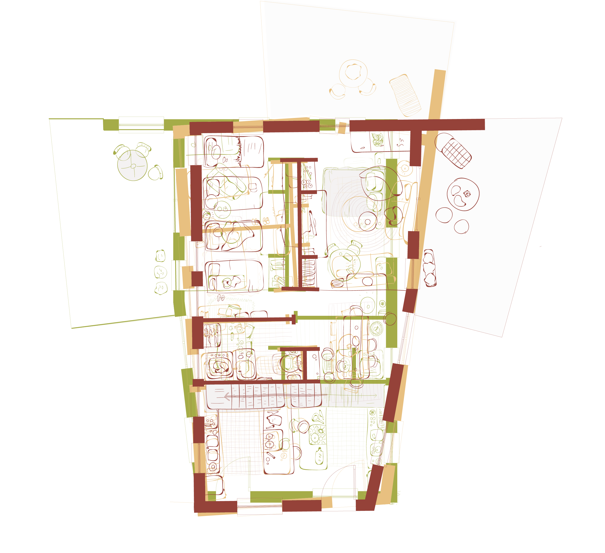

Vivienda ubicada en Bullas, España que se genera a partir de 3 unidades independientes,
construída por tres hermanas en un terreno familiar, con un campo, un patio común, un lugar donde caben todos los primos,
un lugar donde caben todos los amigos.
Caso de estudio utilizado como base para el análisis arquitectónico en tiempos de covid. Te invito a descubrir arquitectura al igual que yo a través de una serie de Netflix, presionando en el siguinte Link The World's Most Extraordinary Homes
JUNTAS PERO NO REVUELTAS nace a partir del caso de estudio y la similitud con el habitar una vivienda en tiempos de covid. Como la arquitectura propicia un habitar en comunidad conservando la privacidad de todos sus habitantes. Entendiendo que este tipo de arquitectura y viviendas han existido desde antaño, realizando la analogía con los cortijos españoles y por qué no, la casa de campo chilena.
El interior de una vivienda sufre mutaciones con el paso del tiempo y de la vida.
La arquitectura debe dar respuesta a dichas transformaciones, entendiendo que lo estandarizado
también puede otorgar modificaciones según la persona y las actividades que realice.
Tal y como se puede ver a continuación; en la Casa para Tres Hermanas.
-

A través de la superposición de tres módulos con las mismas dimensiones podemos dar cuenta de las variaciones
en el interior dependiendo de cada habitante y su contexto. - 


{kind=link}